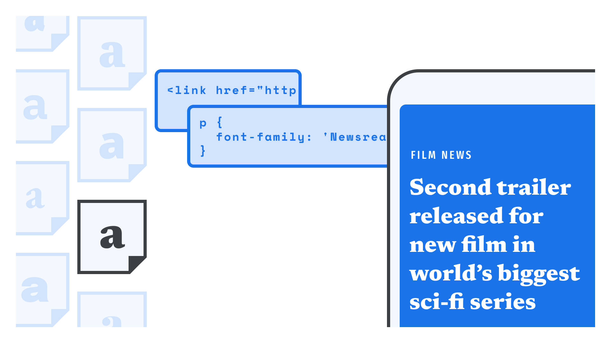

Using web fonts from a font delivery service
By Elliot Jay Stocks · Google Fonts Knowledge.
Reviewed by Bram Stein, Doug Wilson, Erik Spiekermann, Frank Rausch.
Original article · Source on GitHub · CC BY-SA 4.0. Text, illustrations and existing credits reproduced from the licensed Knowledge repository. Open Shelf adapted the layout and links; these adaptations are also CC BY-SA 4.0. No endorsement implied.
The easiest way to implement web fonts on our website is to use a font delivery service, such as Google Fonts or Adobe Fonts, so that most of the heavy lifting is done for us. Typically, all this involves is choosing a typeface or family, and then copying a line or two of code into our website.
In this article we’ll first look at the process of adding fonts from a font delivery service, and then delve into the CSS that’s provided.

Loading web fonts
Once we’ve browsed the font library and made our selection(s), we’ll need to copy the code provided by the delivery service into the <head> of our HTML. Google Fonts provides something like this:
<link rel="preconnect" href="https://fonts.googleapis.com">
<link rel="preconnect" href="https://fonts.gstatic.com" crossorigin>
<link href="https://fonts.googleapis.com/css2?family=FAMILY_NAME:wght@WEIGHT_OR_RANGE&display=swap" rel="stylesheet">
Or, if we'd like to use fonts in HTML email, we’ll use the @import link, which usually looks like this:
<style>
@import url('https://fonts.googleapis.com/css2?family=FAMILY_NAME:wght@WEIGHT_OR_RANGE&display=swap');
</style>
For more information on the Google Fonts API, please see developers.google.com/fonts/docs/css2.
For Adobe Fonts, the process is very similar, but the important differentiation is that the URL uses a “web project ID”. Please refer to the Adobe Fonts documentation for full details.
Google Fonts and Adobe Fonts are the two major font delivery services, but there are of course others, and most offer a similar method for getting their web fonts onto our websites. However, for specifics, refer to the documentation provided by the other providers.
Exploring the CSS served by the font delivery services
If we take a look at the CSS file (in the URL above) that’s been served to us by Google Fonts, Adobe Fonts, or another provider, we’ll notice that it includes an @font-face declaration to load the font file and match it to a family, a style (either normal or italic), and a weight. In its most basic form, the CSS will look something like this, and it’s effectively the exact same CSS we’d have written ourselves if we were not using a font delivery network:
@font-face {
font-family: 'FAMILY_NAME';
font-style: NORMAL_OR_ITALIC;
font-weight: NUMERIC_WEIGHT_VALUE;
src: url(FONT_FILE_NAME.woff2) format('woff2');
}
See our article “Using web fonts” for some general guidelines on web fonts as a whole, including how to counter the flash of unstyled text or FOUT.
From this point, the process of defining our typographic styles in CSS is exactly the same, regardless of where the font file itself is hosted.